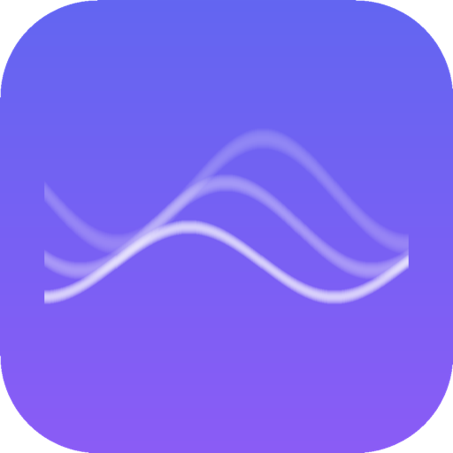

Global Radio & TV Streaming
한국, 일본, 미국, 영국, 유럽 등 수백 개의 라디오 채널을 들어보세요.Listen to hundreds of radio channels from Korea, Japan, USA, UK, Europe, and more.
KBS, MBC, SBS, JTBC, TV조선, 채널A, EBS 등 한국 실시간 TV를 시청하세요.Watch Korean live TV channels including KBS, MBC, SBS, JTBC, TV Chosun, Channel A, and EBS.
KBS, MBC, SBS 보이는 라디오를 앱 안에서 바로 시청할 수 있습니다.Watch live radio broadcasts with video from KBS, MBC, and SBS directly in the app.
이름, 국가, 장르로 채널을 검색하세요. 한 번의 탭으로 지역별 필터링.Find channels by name, country, or genre. Filter by region with a single tap.
좋아하는 채널을 저장해서 언제든 빠르게 접근하세요.Save your favorite channels for quick access anytime.
앱을 닫아도 계속 청취. 잠금 화면에서 재생을 제어하세요.Keep listening with the app closed. Control playback from the lock screen.
한국어와 영어를 한 번의 탭으로 전환할 수 있습니다.Switch between Korean and English with one tap.
낮과 밤 모두 편안한 청취를 위한 아름다운 다크 UI.Beautiful dark UI designed for comfortable listening day and night.
600+ 라디오 채널과 한국 실시간 TV 채널 지원600+ radio channels and Korean live TV channels